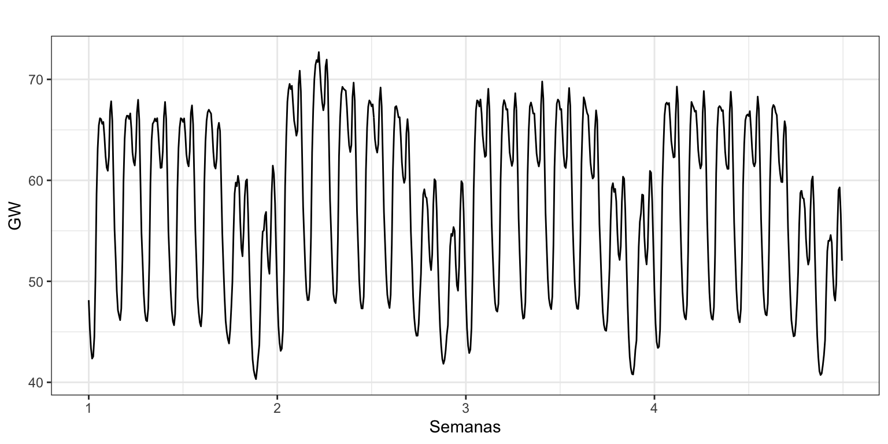
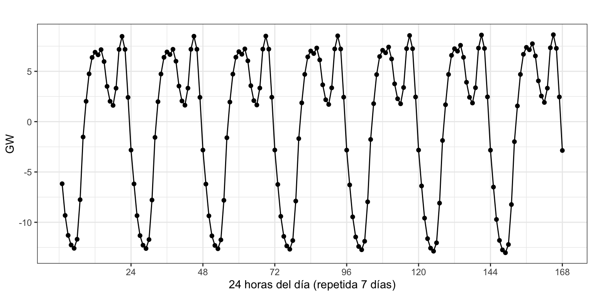
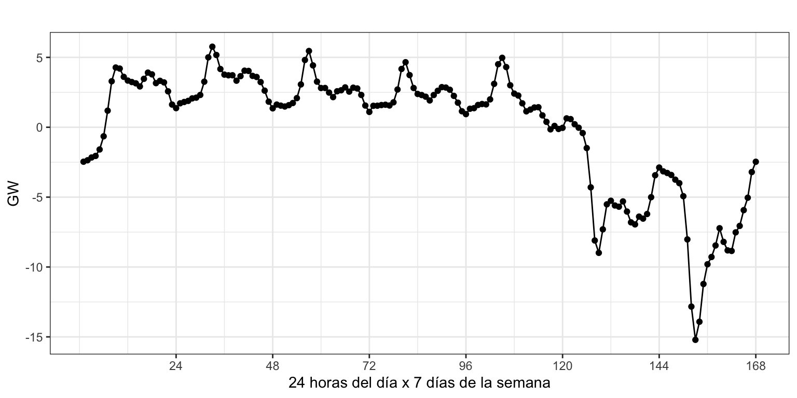
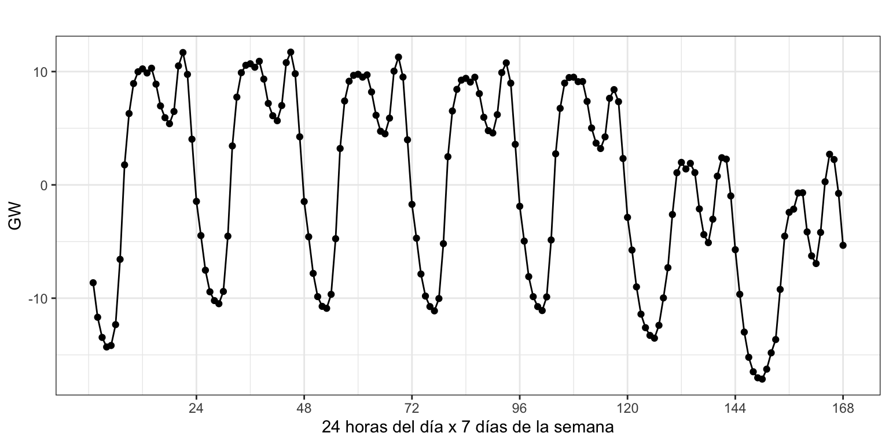
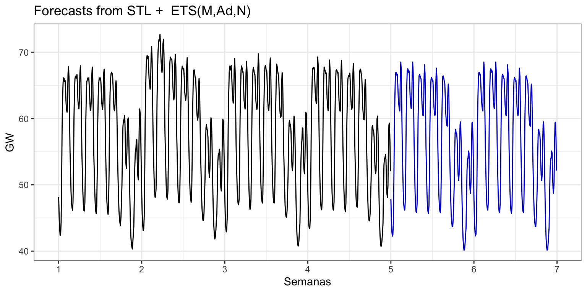
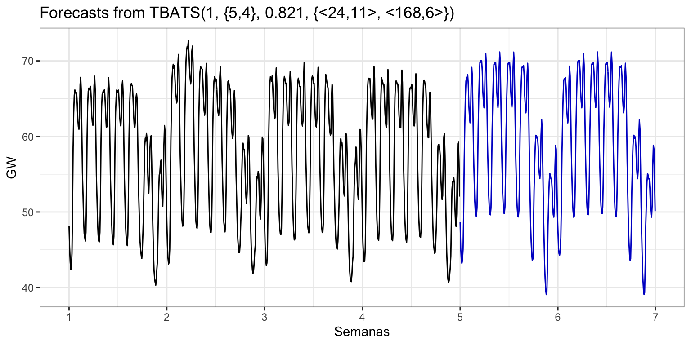

Máster de Bioestadística (Modelización Estadística)
Author
Iván Arribas (Depto. Análisis Económico. Universitat de València)
1 Antecedentes
Durante el curso hemos estudiado series con estructura estacional simple como diaria o mensual. Sin embargo, las series con fechado de alta frecuencia pueden mostrar una estructura estacional mucho más compleja. Por ejemplo, para la serie de consumo eléctrico por hora tenemos tres estacionalidades: la que hay dentro del día, la que tiene lugar en una semana, y la estacionalidad anual.
Con la capacidad actual de recogida de información y almacenamiento, las series con fechado de alta frecuencia y con estacionalidad múltiple son cada vez más habituales, pero los métodos que hemos visto no son adecuados para su ajuste y predicción.
No siempre es necesario considerar todas las estacionalidades de una serie. Por ejemplo la serie de temperaturas por hora previsiblemente no tendrá estacionalidad semanal; y para una serie con fechado horario para la que se dispone información durante 90 días se debe ignorar la estacionalidad anual.
Vamos a aplicar a la serie de consumo de electricidad en España algunos de los modelos que posibilitan estimar y predecir series con múltiple estacionalidad, pero sin entrar en el detalle de los modelos matemáticos subyacentes.
2 Aplicación
La Figura 1 muestra el consumo eléctrico en España en GW para las cuatro semanas de febrero de 2021. Observa que para fechar la serie con doble estacionalidad se usa la función msts (Multi-Seasonal Time Series) en lugar de ts.
Hay una fuerte componente estacional diaria de orden \(24\) con dos picos de consumo, uno hacia las dos del mediodía y otro hacia las nueve de la tarde; y dos valles, uno hacia las cinco de la madrugada (muy acusado) y otro hacia las seis de la tarde. Además, hay otra componente estacional semanal de orden \(24 \times 7 = 168\), donde el consumo es alto de lunes a viernes, algo mas reducido el sábado y aún menor el domingo.
electricidad <-read.csv2("./series/Consumo por hora.csv")electricidad <-msts(electricidad[, 2]/1000 , seasonal.periods =c(24, 24*7), start =1)autoplot(electricidad) +ggtitle("") +ylab("GW") +xlab("Semanas") +scale_x_continuous(breaks =seq(1,4, by =1))

Figura 1: Consumo eléctrico por hora en febrero de 2021
Descomposición
Podemos descomponer la serie de forma análoga a como se hacia para series con una componente estacional usando la función mstl.
Figura 2: Descomposición de Consumo eléctrico por hora
En la Figura 2 aparecen los mismos paneles que has visto en el Tema 2 –datos originales, tendencia y residuo–, más los dos paneles correspondientes a las dos componentes estacionales, de orden 24 y 168 (Seasonal24 y Seasonal168).
Para poder interpretar adecuadamente cada serie hay que fijarse en la escala de los ejes verticales. La tendencia apenas cambia en el periodo de análisis. Las dos componentes estacionales oscilan sobre un rango de valores mayor. Dentro de cada día el consumo de electricidad oscila aproximadamente 20 GW entre las horas pico y las valle (Seasonal24): en los picos se consumen unos 7.5 GW más que la media diaria, y en los valles unos 12.5 GW menos que la media diaria. Por otro lado, el rango de variación semanal en el consumo también es de aproximadamente 20 GW (Seasonal168): de lunes a viernes se consumen como máximo unos 5 GW más que la media semanal y los domingo unos 15 GW menos.
Vamos a mostrar un detalle de la componente estacional diaria, semanal y su composición para la primera semana de la serie (véase Figura 3).

(a) Componente estacional diaria

(b) Componente estacional semanal

(c) Componente estacional diaria + semanal
Figura 3: Componentes estacionales para Consumo eléctrico
Predicción a partir de la descomposición y Alisado exponencial
Existen varios métodos para poder estimar series con estacionalidad múltiple. Uno de los más sencillos consiste en descomponer de la serie. Después, predecir las componentes estacionales por simple repetición y predecir la componente de la tendencia usando Alisado exponencial. En último lugar, se combinan la predicción de la tendencia con las predicciones de las estacionalidades para obtener una predicción de la serie.
La función stlf hace todas estas operaciones de forma automática. Por defecto la tendencia se predice usando Alisado exponencial (“ets”), pero con el argumento method se pueden especificar otros modelos alternativos, “arima”, “naive” o “rwdrift”.
En la Figura 4 se muestra el resultado de aplicar stlf a la serie de consumo eléctrica. La línea negra representa la serie y la línea azul su predicción para las dos semanas siguientes (dos primeras semanas de marzo de 2021). El título por defecto de la figura indica que la tendencia de la serie se ha ajustado usando la función ets y presenta una pendiente aditiva amortiguada y error multiplicativo.
pdatos_stfl <-stlf(electricidad)autoplot(pdatos_stfl, PI =FALSE) +ylab("GW") +xlab("Semanas") +scale_x_continuous(breaks =seq(1, 7, by =1))

Figura 4: Consumo eléctrico y predicción. Descomposición + Alisado
Predicción a partir de Asilado Exponencial y series de Furier
Uno de los inconvenientes del método visto es que estima todos los elementos de cada componente estacional (\(24 + 168\) elementos en nuestro ejemplo) como si fueran independientes, sin tener en cuenta que, por lo general, evolucionan siguiendo una suave curva. Véase en el panel (a) de la Figura 3 la curva que sigue la estacionalidad diaria, donde la componente de una hora determinada está muy relacionada con la componente de la hora precedente y posterior.
Algunos métodos alternativos de predicción usan la dependencia observada entre los elementos de una componente estacional para ajustarlos a una curva paramétrica, por ejemplo funciones trigonométricas o series de Fourier.
Entre los métodos que usan funciones trigonométricas está el implementado en Livera, Hyndman, and Snyder (2011). El método de estimación que emplean estos autores es complejo, requiere tiempo de computación y no siempre el ajuste obtenido es el más adecuado, así que los resultados pueden ser en ocasiones elevados.
Veamos un ejemplo de la implementación de este método con la función tbats. La Figura 5 muestra la predicción para dos semanas.
tmp <-Sys.time()datos_tbats <-tbats(electricidad)pdatos_tbats <-forecast(datos_tbats, h =14*24,level =95)autoplot(pdatos_tbats, PI =FALSE) +ylab("GW") +xlab("Semanas") +scale_x_continuous(breaks =seq(1, 7, by =1))(tiempo <-Sys.time() - tmp)
Time difference of 33.25712 secs

Figura 5: Consumo eléctrico y predicción. Ajuste de las componentes estacionales por funciones trigonométricas
El título de la figura indica el modelo TBATS estimado. Su interpretación precisa la podéis encontrar en Livera, Hyndman, and Snyder (2011). Observa que la estimación del modelo ha requerido de 33 segundos.
Entre los métodos que involucran series de Fourier una propuesta reciente es el modelo Prophet, disponible a través del paquete fable.prophet. Este modelo fue introducido por Facebook (Taylor and Letham (2018)) originalmente para pronosticar datos diarios con estacionalidad semanal y anual, además de efectos calendario. Posteriormente se amplió para cubrir más tipos de datos estacionales.
References
Livera, Alysha M. De, Rob J. Hyndman, and Ralph D. Snyder. 2011. “Forecasting Time Series with Complex Seasonal Patterns Using Exponential Smoothing.”Journal of the American Statistical Association 106 (496): 1513–27. http://www.jstor.org/stable/23239555.